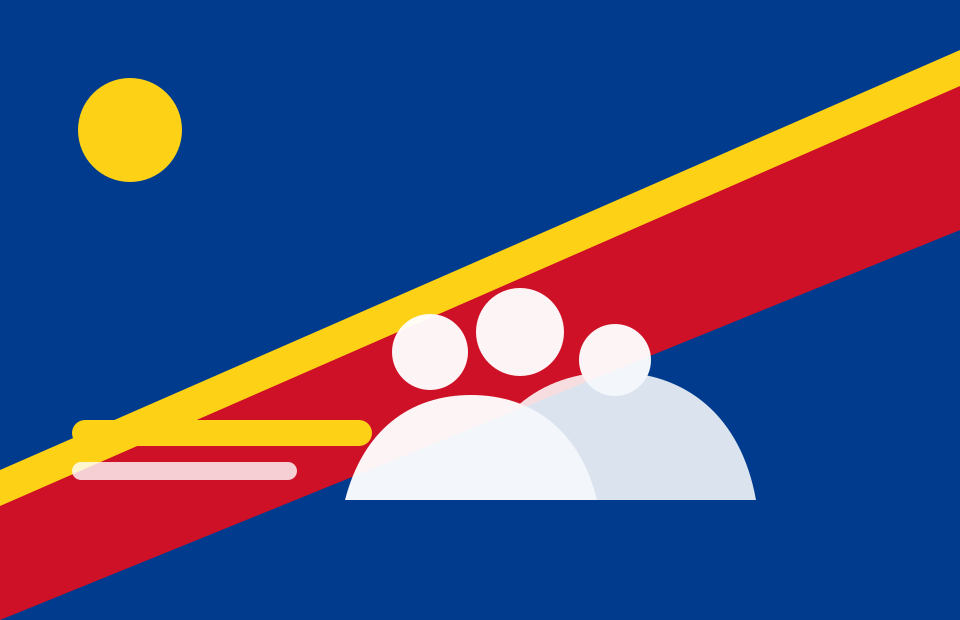

Dieu
Une référence morale qui rappelle la dignité humaine, la vérité et la responsabilité devant la nation.
Parti politique républicain congolais
Dieu - Patrie - Justice
Servir sans se servir
L’UPR est un parti politique républicain congolais engagé pour la souveraineté nationale, la justice, la démocratie, la bonne gouvernance et le bien-être du peuple congolais.
Identité
Une référence morale qui rappelle la dignité humaine, la vérité et la responsabilité devant la nation.
L’amour du Congo, la souveraineté nationale et la défense de l’intérêt général au-dessus des intérêts particuliers.
La primauté du droit, l’égalité des citoyens et la lutte contre les antivaleurs dans la vie publique.
Servir sans se servir, dans l’humilité, la discipline, le travail et le respect du peuple congolais.

Président national
Président national de l’Union des Patriotes pour la République, engagé pour une vision républicaine, patriotique et démocratique du Congo.
Lire le mot du PrésidentProjet de société
Vie du parti

Un appel à l’engagement républicain autour de la devise Dieu - Patrie - Justice.
Lire plusDocuments officiels
Rejoignez un mouvement patriotique et républicain engagé pour servir le Congo sans se servir.
Devenir membre